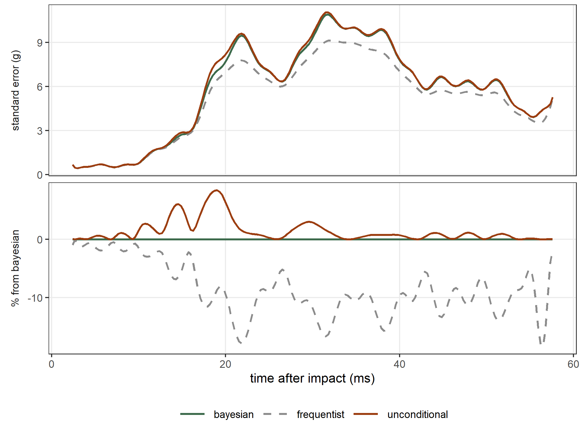
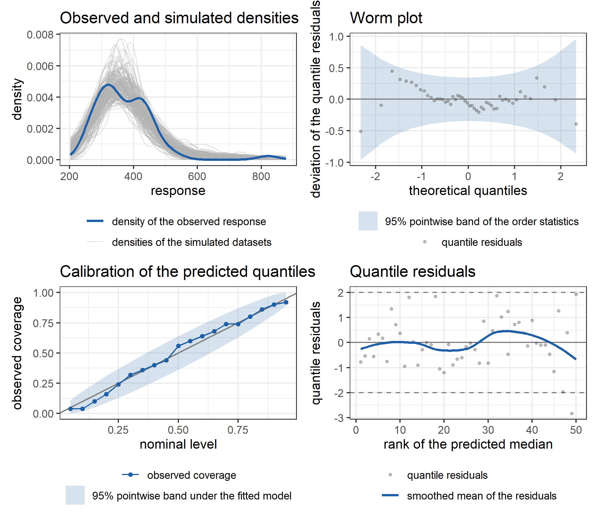
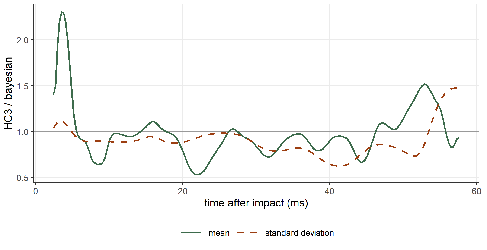
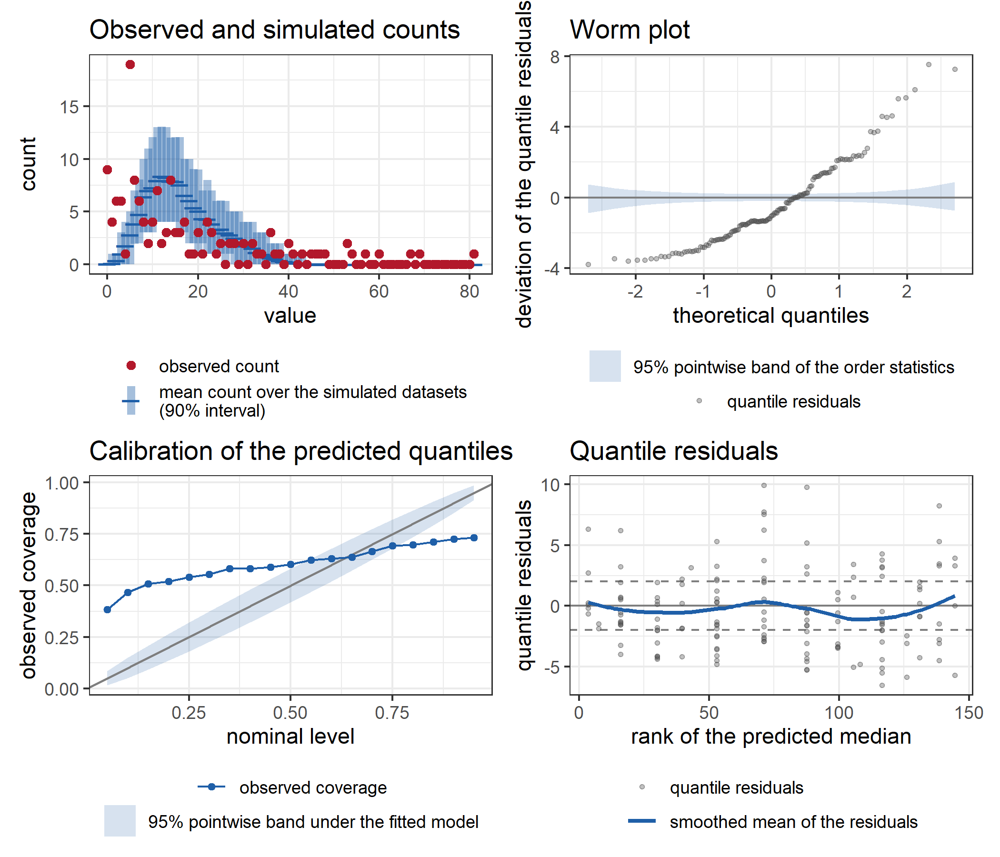
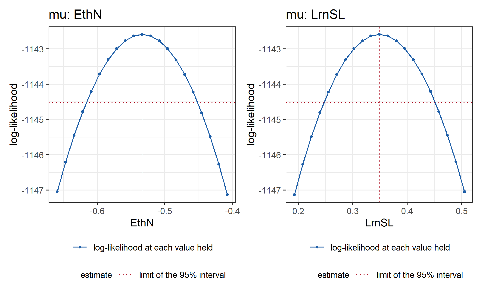
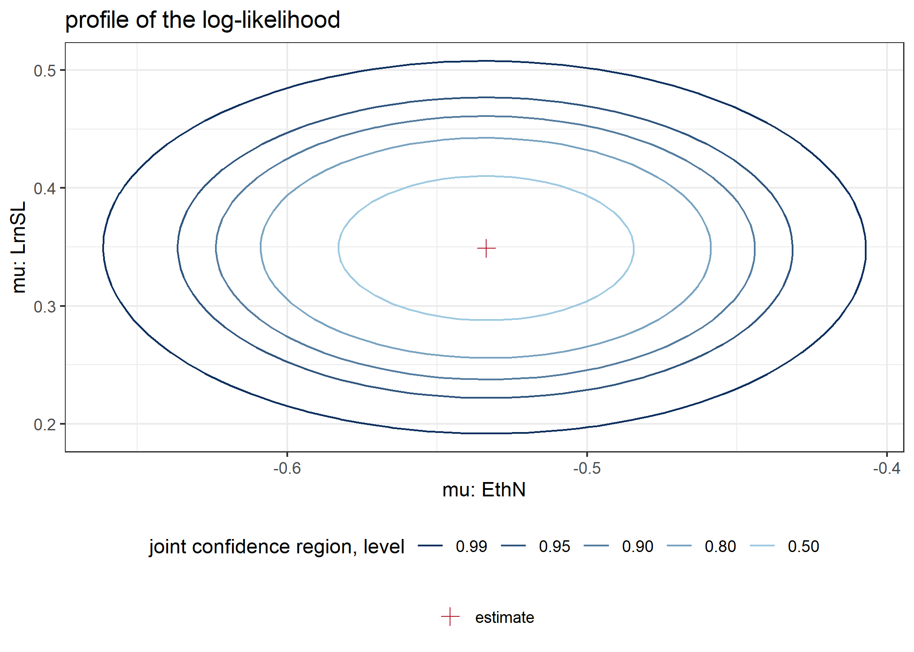
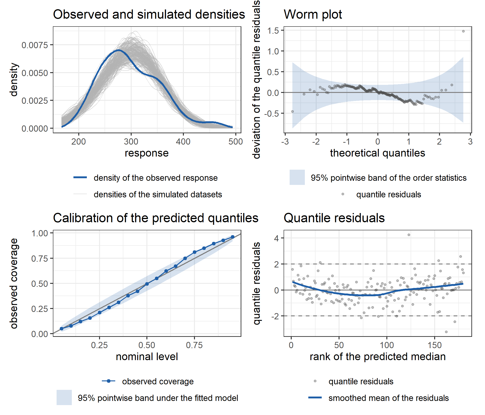
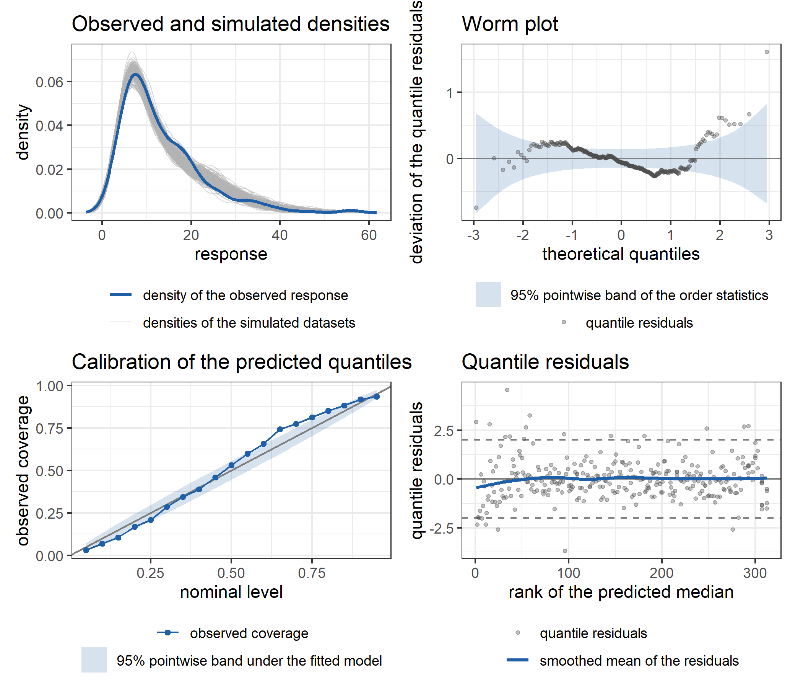
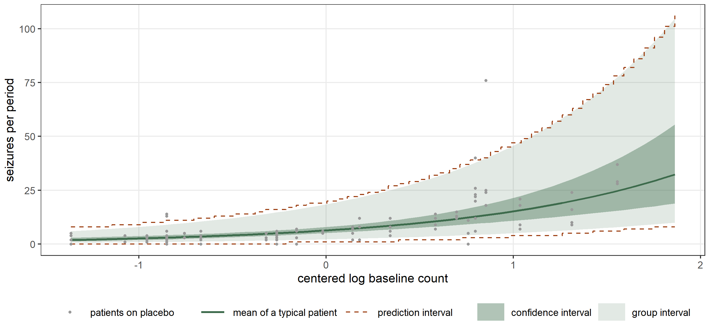
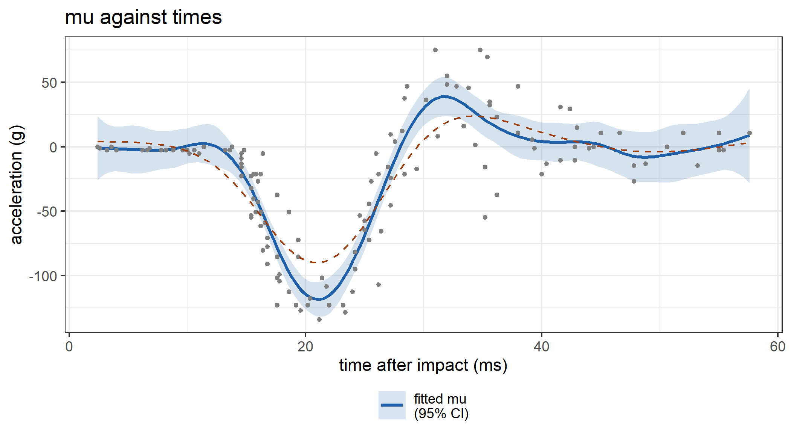

library(statmodels7)
fit0 <- statmod(accel ~ s(times, bspline_smooth(k = 20)),
distrib = gaussian1_distrib(), data = mcycle)
fit1 <- statmod(accel ~ s(times, bspline_smooth(k = 20)) |
sigma ~ s(times, bspline_smooth(k = 10)),
distrib = gaussian1_distrib(), data = mcycle)2 Beyond the basics
Chapter 1 fitted one model and read what statmod() returns for it. This chapter goes further in twelve directions. We compare the three variance matrices that a penalized fit offers and the sandwich variances that do not rely on the distribution, and we explain the two log-likelihoods of a model with random effects. We test a single coefficient with four different statistics, invert these tests into confidence intervals, draw the profile likelihood, build intervals by the bootstrap, and compare two nested models with a likelihood ratio test. Then we predict for a group that the data do not contain, start a fit from the estimates of another fit, change the criterion that estimates the hyperparameters, and use prior weights, offsets and parameters with a known value.
We start again from the two models of Chapter 1 for the motorcycle data: a smooth mean with a constant standard deviation, and a smooth mean with a smooth standard deviation.
2.1 Three variance matrices
The summary of Chapter 1 contains the line “95% intervals, bayesian variance”. Every standard error of a penalized model depends on a choice of variance matrix, and statmodels7 offers three of them. As in Chapter 1, let \(H\) be the information matrix of the coefficients at the fit (the observed information by default), and let \(S\) be the matrix of second derivatives of the penalty. The first two matrices are \[
V_b = (H + S)^{-1}, \qquad V_f = (H + S)^{-1} H (H + S)^{-1} .
\] \(V_f\) is the sampling variance of the penalized estimator when the smoothing parameters are fixed. \(V_b\) is the posterior variance of the coefficients when we read the penalty as a gaussian prior, as REML does. \(V_b\) is larger than \(V_f\). The difference accounts for the bias that the penalty introduces: a penalized curve is pulled towards a straight line, so an interval built from \(V_f\) covers the true curve less often than its nominal level. Intervals built from \(V_b\) have close to their nominal coverage when we average over the points of the curve (Wahba 1983; Nychka 1988; Marra and Wood 2012). This is why \(V_b\) is the default.
Both matrices treat the smoothing parameters as known, although REML estimated them from the same data. The third matrix adds the uncertainty of the smoothing parameters (Wood, Pya, and Säfken 2016): \[ V_u = V_b + J V_\theta J^\top, \qquad J = \frac{\partial \hat\beta}{\partial \theta}, \] where \(\theta\) contains the logarithms of the smoothing parameters and \(V_\theta\) is their variance, which we read from the curvature of the REML criterion. The matrix \(J\) measures how far the estimated coefficients move when a smoothing parameter moves.
We choose among the three matrices with the argument vcov_type of vcov(), confint(), summary() and predict(), which takes the object bayesian_vcov(), frequentist_vcov() or unconditional_vcov(). We print the same three rows and columns as in Chapter 1 under each matrix:
keep <- c("mu:(Intercept)", "mu:s(times).lin", "sigma:(Intercept)")
vcov(fit1, vcov_type = bayesian_vcov())[keep, keep]
#> mu:(Intercept) mu:s(times).lin sigma:(Intercept)
#> mu:(Intercept) 4.283100317 0.849040870 0.003573056
#> mu:s(times).lin 0.849040870 1.816953241 -0.001875532
#> sigma:(Intercept) 0.003573056 -0.001875532 0.004683996
vcov(fit1, vcov_type = frequentist_vcov())[keep, keep]
#> mu:(Intercept) mu:s(times).lin sigma:(Intercept)
#> mu:(Intercept) 4.211233345 0.849887729 0.003220197
#> mu:s(times).lin 0.849887729 1.791167258 -0.001818232
#> sigma:(Intercept) 0.003220197 -0.001818232 0.004677099
vcov(fit1, vcov_type = unconditional_vcov())[keep, keep]
#> mu:(Intercept) mu:s(times).lin sigma:(Intercept)
#> mu:(Intercept) 4.336595919 0.822776385 0.003640965
#> mu:s(times).lin 0.822776385 1.829971318 -0.002052542
#> sigma:(Intercept) 0.003640965 -0.002052542 0.004851722With the default observed information the three matrices have a block between mu and sigma that is not zero, as in Chapter 1. Under the expected information the first two matrices have a zero block, as in Chapter 1, and the third matrix does not. The smoothing parameters of the two equations are estimated together, so a change of one of them moves the coefficients of both equations, and the term \(J V_\theta J^\top\) connects them. We measure the block by its largest absolute value under the expected information, which we choose with the argument information of each variance object:
nm <- rownames(vcov(fit1))
block <- function(V) {
max(abs(V[startsWith(nm, "mu:"), startsWith(nm, "sigma:")]))
}
exp_info <- expected_info()
vb <- vcov(fit1, vcov_type = bayesian_vcov(information = exp_info))
vf <- vcov(fit1, vcov_type = frequentist_vcov(information = exp_info))
vu <- vcov(fit1, vcov_type = unconditional_vcov(information = exp_info))
c(bayesian = block(vb), frequentist = block(vf), unconditional = block(vu))
#> bayesian frequentist unconditional
#> 0.0000000 0.0000000 0.8282228The first two values are exactly zero and the third is not. The function confint() takes the same argument:
confint(fit1, parm = keep, vcov_type = unconditional_vcov())
#> parameter term coefficient
#> mu:(Intercept) mu linpar (Intercept)
#> mu:s(times).lin mu s(times, bspline_smooth(k = 20)) s(times).lin
#> sigma:(Intercept) sigma linpar (Intercept)
#> estimate se lower upper
#> mu:(Intercept) -25.103779 2.0824495 -29.185305 -21.022253
#> mu:s(times).lin 14.086513 1.3527643 11.435144 16.737883
#> sigma:(Intercept) 2.703846 0.0696543 2.567326 2.840366We compare the three standard errors of the fitted mean on a grid of 200 times:
grid <- data.frame(times = seq(from = min(mcycle$times),
to = max(mcycle$times), length.out = 200))
pb <- predict(fit1, what = "mu", newdata = grid, se = TRUE,
vcov_type = bayesian_vcov())
pf <- predict(fit1, what = "mu", newdata = grid, se = TRUE,
vcov_type = frequentist_vcov())
pu <- predict(fit1, what = "mu", newdata = grid, se = TRUE,
vcov_type = unconditional_vcov())
head(pb, n = 3)
#> fit se lower upper
#> 1 -0.5089894 0.6821100 -1.845900 0.8279217
#> 2 -0.9574009 0.4757446 -1.889843 -0.0249586
#> 3 -1.3133117 0.4370941 -2.170000 -0.4566229
head(pf, n = 3)
#> fit se lower upper
#> 1 -0.5089894 0.6755314 -1.833007 0.81502776
#> 2 -0.9574009 0.4752805 -1.888934 -0.02586827
#> 3 -1.3133117 0.4347368 -2.165380 -0.46124316
head(pu, n = 3)
#> fit se lower upper
#> 1 -0.5089894 0.6826316 -1.846923 0.82894388
#> 2 -0.9574009 0.4757788 -1.889910 -0.02489157
#> 3 -1.3133117 0.4375254 -2.170846 -0.45577758The three predictions fit are the same, and only the standard errors differ. Figure 2.1 shows them over the whole time range. The frequentist standard error is smaller than the Bayesian one at every time, by 9.2% in the median and by up to 18.3%. In the first 15 milliseconds the two are almost equal, because there the curve is nearly flat and the penalty moves it very little. The unconditional standard error is larger than the Bayesian one at every time, by 0.8% in the median and by 8.4% at 19.0 milliseconds. The two curves differ where the curve bends most, because there the fitted mean depends most on the smoothing parameter.

Which of the three intervals covers the true curve at its nominal rate? We answer with a small simulation study. The function rstatmod() of Chapter 1 draws data from a model that we write, and when we do not give the coefficients it draws them: here it draws a smooth function of \(x\) from the prior that the penalty defines, with a smoothing parameter drawn as well. We draw one such function on 100 equally spaced points and 40 data sets from it. We fit each data set and count how many of the 100 true means each pointwise 95% interval contains.
set.seed(2)
xd <- data.frame(x = seq(from = 0, to = 1, length.out = 100))
sim <- rstatmod(y ~ s(x), distrib = gaussian1_distrib(), data = xd,
n_sim = 40)
cover <- matrix(NA, nrow = 40, ncol = 3,
dimnames = list(NULL, c("bayesian", "frequentist",
"unconditional")))
for (k in 1:40) {
fit <- statmod(y ~ s(x), distrib = gaussian1_distrib(),
data = sim$data[[k]])
truth <- sim$theta[[k]]$mu
p_b <- predict(fit, what = "mu", newdata = xd, se = TRUE,
vcov_type = bayesian_vcov())
p_f <- predict(fit, what = "mu", newdata = xd, se = TRUE,
vcov_type = frequentist_vcov())
p_u <- predict(fit, what = "mu", newdata = xd, se = TRUE,
vcov_type = unconditional_vcov())
cover[k, "bayesian"] <- mean(p_b$lower <= truth & truth <= p_b$upper)
cover[k, "frequentist"] <- mean(p_f$lower <= truth & truth <= p_f$upper)
cover[k, "unconditional"] <- mean(p_u$lower <= truth & truth <= p_u$upper)
}
colMeans(cover)
#> bayesian frequentist unconditional
#> 0.93900 0.92025 0.94400Averaged over the points and the data sets, the Bayesian intervals cover the true mean 93.9% of the time, the frequentist ones 92.0% and the unconditional ones 94.4%, against a nominal 95%. The frequentist intervals cover less because \(V_f\) does not include the bias of the penalized curve. This agrees with Marra and Wood (2012), and it is the reason for the default.
2.2 Sandwich variances
The three matrices of the previous section rest on the model. \(V_f\), for example, uses the information \(H\) in two roles: as the curvature of the log-likelihood, which converts a change of the score into a change of the estimate, and as the variance of the score. The second role holds only when the distribution is right. If the variance of the response is not the one that the family implies, the score varies more, or less, than \(H\) says, and the standard errors are wrong even though the estimates may still be good.
A sandwich variance keeps the first role of \(H\) and estimates the variance of the score from the data. Let \(s_i\) be the score of observation \(i\), the vector of derivatives of its log-likelihood \(\ell_i\) with respect to the coefficients, evaluated at the fit. The sandwich variance is \[ V_s = V_b \, B \, V_b, \qquad B = \sum_{i=1}^n s_i s_i^\top , \] where \(V_b = (H + S)^{-1}\) is the matrix of the previous section. The two outer factors are the “bread”, and \(B\), the empirical variance of the scores, is the “meat”. For a model without penalties \(V_b = H^{-1}\), and \(V_s\) is the estimator of White (1980). If the model is right, \(B\) estimates \(H\) and \(V_s\) is close to \(V_f\).
The scores at the fit are smaller than the scores at the true coefficients, because the fit has adapted the coefficients to the same observations, and the shrinkage is strongest for observations with high leverage. Let \(h_i\) be the leverage of observation \(i\), the diagonal element of the hat matrix, and let \(\bar h\) be its mean. The corrections HC0 to HC4 replace \(s_i\) with \(s_i (1 - h_i)^{-\delta_i/2}\), where \(\delta_i = 0\) for HC0, \(1\) for HC2, \(2\) for HC3 and \(\min(4, h_i/\bar h)\) for HC4 (MacKinnon and White 1985; Cribari-Neto 2004). HC1 multiplies HC0 by \(n/(n - p)\). We obtain each of them as an argument of frequentist_vcov():
data("PublicSchools", package = "sandwich")
schools <- na.omit(PublicSchools)
schools$Income <- schools$Income / 1e4
fit_ps <- statmod(Expenditure ~ Income + I(Income^2),
distrib = gaussian1_distrib(), data = schools)
summary(fit_ps)
#> A statmod fit
#>
#> Call: statmod(formula = Expenditure ~ Income + I(Income^2), distrib = gaussian1_distrib(),
#> data = schools)
#>
#> Distribution: gaussian1 Observations: 50
#>
#> === mu [identity link]
#>
#> Parametric terms
#> estimate se z p lower upper
#> (Intercept) 832.9 327.3 2.545 0.010932 191.4 1474
#> Income -1834 829 -2.213 0.026926 -3459 -209.4
#> I(Income^2) 1587 519.1 3.057 0.002232 569.7 2604
#>
#> === sigma [log link]
#>
#> Parametric terms
#> estimate se z p lower upper
#> (Intercept) 4.037 0.1031 39.14 < 1e-16 3.835 4.24
#>
#> 95% intervals, bayesian variance
#> conditional log-likelihood -271.316714 effective df 4.00
#> cAIC 550.633 cBIC 558.282
#> fitted in 80 ms
#> inner max |grad|/se 1e-15 min eigen 0.00011
#> outer max |grad|/se 6.7e-12 min eigen 1The data contain the expenditure on public schools and the income, both per person, of 50 states of the United States in 1979, with the income in tens of thousands of dollars. The quadratic term in income is the classical example of Cribari-Neto (2004). Figure 2.2 shows the diagnostic graphs of the fit.
plot(fit_ps, data = schools)
We compute the standard errors of the three coefficients under the five corrections, and we divide them by those of the function vcovHC() of the package sandwich (Zeileis 2004) on the same model fitted with lm():
hc <- list(HC0 = hc0_sandwich(), HC1 = hc1_sandwich(), HC2 = hc2_sandwich(),
HC3 = hc3_sandwich(), HC4 = hc4_sandwich())
se_hc <- sapply(hc, function(s) {
sqrt(diag(vcov(fit_ps, vcov_type = frequentist_vcov(sandwich = s),
param = "mu")))
})
lm_ps <- lm(Expenditure ~ Income + I(Income^2), data = schools)
se_ref <- sapply(names(hc), function(type) {
sqrt(diag(sandwich::vcovHC(lm_ps, type = type)))
})
se_hc
#> HC0 HC1 HC2 HC3 HC4
#> mu:(Intercept) 460.8917 480.5128 688.4814 1095.001 3008.010
#> mu:Income 1243.0430 1295.9619 1866.4061 2975.411 8183.191
#> mu:I(Income^2) 829.9927 865.3272 1250.1471 1995.242 5488.929
se_hc / se_ref
#> HC0 HC1 HC2 HC3 HC4
#> mu:(Intercept) 1 1.010811 1 1 1
#> mu:Income 1 1.010811 1 1 1
#> mu:I(Income^2) 1 1.010811 1 1 1Four of the five corrections are those of vcovHC(). The standard errors of HC1 differ by the factor 1.010811. In statmodels7 the number \(p\) in \(n/(n - p)\) is the number of effective parameters of the whole model, which here includes the coefficient of the equation for \(\sigma\), so \(p = 4\) where vcovHC() takes \(p = 3\). The model-based standard error of the quadratic term is 519.1, HC0 gives 830.0 and HC4 gives 5,488.9. The corrections grow so much because one state has a leverage of 0.651, against a mean of 0.060: Alaska, with the highest income and the highest expenditure, decides the curvature of the fitted parabola almost alone.
With an equation for each of the \(d\) parameters of the distribution, the score \(s_i\) has a block for each equation, and the leverage of observation \(i\) is a \(d \times d\) block \(H_{ii}\) of the hat matrix. HC2 to HC4 then replace \(s_i\) with \(F_i s_i\), where \[ F_i = \exp\left\{-\tfrac{1}{2} D_i \log(I - H_{ii}) D_i\right\}, \qquad D_i = \mathrm{diag}\left(\delta_{i1}^{1/2}, \ldots, \delta_{id}^{1/2}\right), \] \(\log\) and \(\exp\) are functions of a matrix, and \(\delta_{ia}\) is the exponent of the correction for equation \(a\), computed for HC4 from the leverages of that equation. When every \(\delta_{ia}\) equals \(\delta\), \(F_i\) is \((I - H_{ii})^{-\delta/2}\). In the gaussian model above the block is diagonal, and the correction of the mean is the one of the textbook.
Clusters and serial dependence
When the observations come in groups, the scores of one group can be correlated, and the meat sums the scores of each group before it squares them (Liang and Zeger 1986): \[
B = \sum_{g=1}^G S_g S_g^\top, \qquad S_g = \sum_{i \in g} s_i .
\] The same functions take the argument cluster. With a cluster they give the corrections CR0 to CR3; CR2 is the correction of Bell and McCaffrey (2002). The data PetersenCL of the package sandwich are a simulated panel of 500 firms observed for 10 years, in which both the regressor and the error have a component that is common to the years of a firm:
data("PetersenCL", package = "sandwich")
fit_pc <- statmod(y ~ x, distrib = gaussian1_distrib(), data = PetersenCL)
summary(fit_pc)
#> A statmod fit
#>
#> Call: statmod(formula = y ~ x, distrib = gaussian1_distrib(), data = PetersenCL)
#>
#> Distribution: gaussian1 Observations: 5000
#>
#> === mu [identity link]
#>
#> Parametric terms
#> estimate se z p lower upper
#> (Intercept) 0.02968 0.02836 1.047 0.2953 -0.0259 0.08526
#> x 1.035 0.02858 36.2 <1e-16 0.9788 1.091
#>
#> === sigma [log link]
#>
#> Parametric terms
#> estimate se z p lower upper
#> (Intercept) 0.6958 0.01 69.56 < 1e-16 0.6762 0.7154
#>
#> 95% intervals, bayesian variance
#> conditional log-likelihood -10572.603939 effective df 3.00
#> cAIC 21151.208 cBIC 21170.759
#> fitted in 120 ms
#> inner max |grad|/se 2.9e-15 min eigen 0.99
#> outer max |grad|/se 1.8e-13 min eigen 1
cr2 <- hc2_sandwich(cluster = ~ firm, data = PetersenCL)
vcov(fit_pc, vcov_type = frequentist_vcov(sandwich = cr2), param = "mu")
#> mu:(Intercept) mu:x
#> mu:(Intercept) 4.494487e-03 -6.592912e-05
#> mu:x -6.592912e-05 2.568236e-03
sandwich::vcovCL(lm(y ~ x, data = PetersenCL), cluster = ~ firm,
type = "HC2")
#> (Intercept) x
#> (Intercept) 4.494487e-03 -6.592912e-05
#> x -6.592912e-05 2.568236e-03The two matrices are equal. The standard error of the slope is 0.0507 with the clusters and 0.0284 without them: ignoring the firms understates it by a factor of 1.79.
In a time series the scores of nearby times are correlated. The function hac_sandwich() adds to the meat the products of scores \(l\) steps apart, with weights that decrease with \(l\) (Newey and West 1987): \[
B = \sum_t s_t s_t^\top + \sum_{l=1}^{L} w_l \sum_{t > l}
\left( s_t s_{t-l}^\top + s_{t-l} s_t^\top \right), \qquad
w_l = 1 - \frac{l}{L + 1},
\] with the default bandwidth \(L = \lfloor 4 (T/100)^{2/9} \rfloor\) of Newey and West (1994) for \(T\) observations. We regress the level of Lake Huron on the year, from 1875 to 1972:
huron <- data.frame(level = as.numeric(LakeHuron),
year = as.numeric(time(LakeHuron)))
fit_lh <- statmod(level ~ year, distrib = gaussian1_distrib(), data = huron)
summary(fit_lh)
#> A statmod fit
#>
#> Call: statmod(formula = level ~ year, distrib = gaussian1_distrib(),
#> data = huron)
#>
#> Distribution: gaussian1 Observations: 98
#>
#> === mu [identity link]
#>
#> Parametric terms
#> estimate se z p lower upper
#> (Intercept) 625.6 7.764 80.57 < 1e-16 610.3 640.8
#> year -0.0242 0.004036 -5.996 2.02e-09 -0.03211 -0.01629
#>
#> === sigma [log link]
#>
#> Parametric terms
#> estimate se z p lower upper
#> (Intercept) 0.1225 0.07217 1.697 0.08969 -0.01898 0.2639
#>
#> 95% intervals, bayesian variance
#> conditional log-likelihood -150.058172 effective df 3.00
#> cAIC 306.116 cBIC 313.871
#> fitted in 110 ms
#> inner max |grad|/se 4.5e-13 min eigen 0.00011
#> outer max |grad|/se 1.5e-07 min eigen 1
hac <- hac_sandwich(time = ~ year, data = huron)
vcov(fit_lh, vcov_type = frequentist_vcov(sandwich = hac), param = "mu")
#> mu:(Intercept) mu:year
#> mu:(Intercept) 167.56510597 -8.748432e-02
#> mu:year -0.08748432 4.568345e-05
sandwich::NeweyWest(lm(level ~ year, data = huron), lag = 3,
prewhite = FALSE, adjust = FALSE)
#> (Intercept) year
#> (Intercept) 167.56510597 -8.748432e-02
#> year -0.08748432 4.568345e-05With \(T = 98\) the bandwidth is 3, and the matrix is the one of NeweyWest() with three lags, no prewhitening and no correction for the degrees of freedom. The standard error of the slope is 0.00676 metres per year, against 0.00404 under the model: the level of the lake is serially correlated, and a model with independent errors overstates the information about the trend.
A penalized model with two equations
The bread \(V_b\) makes the sandwich available for penalized models too. We return to the second motorcycle model, whose mean and standard deviation are both smooth functions of time, and we compare the standard error of each fitted curve under HC3 with the Bayesian one:
hc3 <- frequentist_vcov(sandwich = hc3_sandwich())
pb_mu <- predict(fit1, what = "mu", newdata = grid, se = TRUE)
p3_mu <- predict(fit1, what = "mu", newdata = grid, se = TRUE,
vcov_type = hc3)
pb_sigma <- predict(fit1, what = "sigma", newdata = grid, se = TRUE)
p3_sigma <- predict(fit1, what = "sigma", newdata = grid, se = TRUE,
vcov_type = hc3)
summary(p3_mu$se / pb_mu$se)
#> Min. 1st Qu. Median Mean 3rd Qu. Max.
#> 0.5312 0.8115 0.9457 0.9812 1.0368 2.3056
summary(p3_sigma$se / pb_sigma$se)
#> Min. 1st Qu. Median Mean 3rd Qu. Max.
#> 0.6247 0.8044 0.8884 0.8987 0.9461 1.4764Figure 2.3 shows the two ratios. The HC3 standard error of the mean is between 0.53 and 2.31 times the Bayesian one, and the one of the standard deviation between 0.62 and 1.48 times. Both ratios are largest at an end of the time range, the first at 3.5 milliseconds and the second at 57.0, where few observations with a high leverage carry the curve, and both are below one over most of the middle. Here there is no reference package: the sandwich of a model with an equation for each parameter of the distribution, with penalties in each equation, is a part of statmodels7 that we cannot compare with another implementation.

2.3 Which likelihood
A model with random effects has two log-likelihoods. We use a classic data set to explain them. The data frame Orthodont from the nlme package gives the distance, in millimeters, from the pituitary to the pterygomaxillary fissure of 27 children, measured every two years from age 8 to age 14 (Potthoff and Roy 1964; Pinheiro and Bates 2000). We center the age at 11 years and give each child its own intercept and its own slope in age: \[
y_{ij} \sim \mathrm{N}(\mu_{ij}, \sigma), \qquad
\mu_{ij} = \beta_0 + \beta_1 a_{ij} + b_{0i} + b_{1i} a_{ij}, \qquad
(b_{0i}, b_{1i}) \sim \mathrm{N}(0, \Sigma_b),
\] where \(a_{ij}\) is the centered age of child \(i\) at its \(j\)-th measurement. We center the age inside the formula, with I(age - 11). The term random(~ I(age - 11) | Subject) gives each child the two random effects, and by default their covariance matrix \(\Sigma_b\) is unstructured, so the two effects can be correlated.
data(Orthodont, package = "nlme")
reml1 <- statmod(distance ~ I(age - 11) + random(~ I(age - 11) | Subject),
distrib = gaussian1_distrib(), data = Orthodont)
summary(reml1)
#> A statmod fit
#>
#> Call: statmod(formula = distance ~ I(age - 11) + random(~I(age - 11) |
#> Subject), distrib = gaussian1_distrib(), data = Orthodont)
#>
#> Distribution: gaussian1 Observations: 108
#>
#> === mu [identity link]
#>
#> Parametric terms
#> estimate se z p lower upper
#> (Intercept) 24.02 0.4297 55.91 < 1e-16 23.18 24.87
#> I(age - 11) 0.6602 0.07125 9.265 < 1e-16 0.5205 0.7998
#>
#> random(~I(age - 11) | Subject) [54 coefficients, edf 31.60]
#> estimate se lower upper
#> sd[(Intercept)] [reml] 2.134 0.3244 1.584 2.875
#> sd[I(age - 11)] [reml] 0.2264 0.09153 0.1025 0.5001
#> cor[(Intercept), I(age - 11)] [reml] 0.5026 0.3152 -0.2671 0.8808
#> predicted effects (27 levels of Subject)
#> Min. 1st Qu. Median Mean 3rd Qu. Max.
#> (Intercept) -5.038 -0.9243 -0.2157 0 0.8998 4.976
#> I(age - 11) -0.2506 -0.1068 0.009858 0 0.08319 0.4137
#>
#> === sigma [log link]
#>
#> Parametric terms
#> estimate se z p lower upper
#> (Intercept) 0.2701 0.08656 3.12 0.00181 0.1004 0.4397
#>
#> 95% intervals, bayesian variance
#> conditional log-likelihood -165.543327 effective df 34.60
#> cAIC 400.289 cBIC 493.094
#> fitted in 660 ms
#> inner max |grad|/se 6.9e-15 min eigen 0.042
#> outer max |grad|/se 1.7e-08 min eigen 0.56
#> 1 note: print(summary(fit), notes = TRUE)statmodels7 reads the random effects as coefficients with a penalty. The penalty is minus the logarithm of the gaussian density of the random effects, and its hyperparameters describe \(\Sigma_b\). The summary reports them as the two standard deviations and the correlation, estimated by REML. The function lme() of the nlme package fits the same model:
library(nlme)
lme1 <- lme(distance ~ I(age - 11), random = ~ I(age - 11) | Subject,
data = Orthodont)
fixef(lme1)
#> (Intercept) I(age - 11)
#> 24.0231481 0.6601852
VarCorr(lme1)
#> Subject = pdLogChol(I(age - 11))
#> Variance StdDev Corr
#> (Intercept) 4.55535983 2.1343289 (Intr)
#> I(age - 11) 0.05126956 0.2264278 0.503
#> Residual 1.71620530 1.3100402The two packages give the same estimates of the fixed effects, the same standard deviations and the same correlation. The residual standard deviation of lme() is \(\exp(\hat\gamma_0)\), the exponential of the intercept of sigma:
exp(coef(reml1)$sigma)
#> (Intercept)
#> 1.31004The two log-likelihoods of the model differ in how they treat the random effects \(b\). The conditional log-likelihood is computed at the estimated random effects \(\hat b\): \[
\ell_C = \log f(y \mid \hat b).
\] It is the one that logLik() returns by default, and the one that cAIC uses. The marginal log-likelihood integrates the random effects out: \[
\ell_M = \log \int f(y \mid b)\, \pi(b)\, db ,
\] where \(\pi\) is the gaussian density of \(b\). statmodels7 computes the integral by the Laplace method, which is exact for a gaussian response. REML also integrates the unpenalized coefficients \(\beta_0\) and \(\beta_1\) (Patterson and Thompson 1971). The argument loglik_type = "marginal" of logLik() returns the criterion that the fit maximized: the REML criterion by default, and the marginal log-likelihood when the fit used outer_criterion = ml().
logLik(reml1)
#> 'log Lik.' -165.5433 (df=34.6012)
logLik(reml1, loglik_type = "marginal")
#> 'log Lik.' -221.3183 (df=6)
logLik(lme1)
#> 'log Lik.' -221.3183 (df=6)The marginal value is the restricted log-likelihood that lme() reports. Its attribute df counts the two fixed effects, the three parameters of \(\Sigma_b\) and \(\sigma\). The conditional value is larger, because \(f(y \mid
\hat b)\) uses the random effects of each child, and its df is the total effective degrees of freedom of Chapter 1. The two values answer different questions. The marginal log-likelihood describes a new child drawn from the population, and the conditional one describes the 27 children that we observed (Vaida and Blanchard 2005).
2.4 Testing one coefficient
The column z of the summary is a Wald statistic, which tests that a coefficient is zero. Three other statistics test a coefficient \(\beta_j\) against any value \(\beta_{j0}\). We write \(\ell\) for the log-likelihood, \(\hat\theta\) for the estimate of all the coefficients, and \(\tilde\theta\) for the estimate when \(\beta_j\) is held at \(\beta_{j0}\). Let \(U(\theta)\) be the gradient of \(\ell\) and \(I(\theta)\) the Fisher information. The four statistics are \[
\begin{aligned}
W &= (\hat\beta_j - \beta_{j0})^2 / \mathrm{se}(\hat\beta_j)^2
&& \text{(Wald)}, \\
L &= 2\{\ell(\hat\theta) - \ell(\tilde\theta)\}
&& \text{(likelihood ratio)}, \\
R &= U(\tilde\theta)^\top I(\tilde\theta)^{-1} U(\tilde\theta)
&& \text{(Rao score)}, \\
G &= U_j(\tilde\theta)\, (\hat\beta_j - \beta_{j0})
&& \text{(Terrell gradient)}.
\end{aligned}
\] If \(\beta_j = \beta_{j0}\), each of them has approximately a \(\chi^2\) distribution with one degree of freedom (Cox and Hinkley 1974; Terrell 2002). \(W\) needs only the fit that we have. The other three need the model fitted again with \(\beta_j\) held at \(\beta_{j0}\). For a penalized model the three use the penalized log-likelihood, with the smoothing parameters held at their estimates.
We use a nonlinear model. The data frame Puromycin gives the initial rate of an enzymatic reaction, in counts per minute per minute, against the concentration of the substrate, in parts per million (Bates and Watts 1988). We use the 12 measurements on cells treated with the antibiotic puromycin. The Michaelis–Menten model describes the rate as \[
y_i \sim \mathrm{N}(\mu_i, \sigma), \qquad
\mu_i = \frac{V_m\, c_i}{K + c_i},
\] where \(c_i\) is the concentration. The parameter \(V_m\) is the largest rate, and \(K\) is the concentration at which the rate reaches half of \(V_m\). The term nl() takes the formula of the mean as a function of its parameters, and a later chapter describes it in full. The formula of the model starts with 0 because the curve has no intercept.
puro <- Puromycin[Puromycin$state == "treated", ]
fit_p <- statmod(rate ~ 0 + nl(~ Vm * conc / (K + conc)),
distrib = gaussian1_distrib(), data = puro)
coef(fit_p)
#> $mu
#> nl.Vm nl.K
#> 212.68374314 0.06412128
#>
#> $sigma
#> (Intercept)
#> 2.391846The function statmod_test() computes one of the four statistics for one coefficient. Its arguments name the parameter of the distribution, the coefficient, the value under the null hypothesis and the statistic. We test \(K = 0.05\) with each of the four:
statmod_test(fit_p, param = "mu", coefname = "nl.K", value = 0.05,
test = wald_test())
#>
#> Wald test on a statmod fit
#>
#> coefficient: mu:nl.K
#> X-squared = 2.908, df = 1, p-value 0.08814
#> alternative hypothesis: true nl.K is not equal to 0.05
#> estimate: 0.06412
statmod_test(fit_p, param = "mu", coefname = "nl.K", value = 0.05,
test = lr_test())
#>
#> Likelihood-ratio test on a statmod fit
#>
#> coefficient: mu:nl.K
#> X-squared = 3.324, df = 1, p-value 0.06825
#> alternative hypothesis: true nl.K is not equal to 0.05
#> estimate: 0.06412
statmod_test(fit_p, param = "mu", coefname = "nl.K", value = 0.05,
test = score_test())
#>
#> Rao score test on a statmod fit
#>
#> coefficient: mu:nl.K
#> X-squared = 2.604, df = 1, p-value 0.1066
#> alternative hypothesis: true nl.K is not equal to 0.05
#> estimate: 0.06412
statmod_test(fit_p, param = "mu", coefname = "nl.K", value = 0.05,
test = gradient_test())
#>
#> Terrell gradient test on a statmod fit
#>
#> coefficient: mu:nl.K
#> X-squared = 3.211, df = 1, p-value 0.07316
#> alternative hypothesis: true nl.K is not equal to 0.05
#> estimate: 0.06412The four statistics range from 2.60 for the score test to 3.32 for the likelihood ratio, with p-values between 0.068 and 0.107. With 12 observations they do not agree closely, and none of them rejects \(K = 0.05\) at the 5% level.
We can compute two of them by hand. The Wald statistic comes from the estimate and the standard error that confint() reports:
ci_k <- confint(fit_p, parm = "mu:nl.K")
(ci_k$estimate - 0.05)^2 / ci_k$se^2
#> [1] 2.907957For the likelihood ratio, statmod_test() compares the maximum log-likelihood of the full model with the maximum log-likelihood of the model with \(K\) held at 0.05, with \(\sigma\) estimated by maximum likelihood in both. The function nls() fits the full model by least squares. When \(K\) is held at 0.05 the mean is \(V_m\) times the known variable \(c_i/(0.05 + c_i)\), so lm() without an intercept fits the restricted model. The function logLik() of both returns the maximum log-likelihood:
nls_p <- nls(rate ~ Vm * conc / (K + conc), data = puro,
start = list(Vm = 200, K = 0.05))
puro$x05 <- puro$conc / (0.05 + puro$conc)
lm_05 <- lm(rate ~ 0 + x05, data = puro)
2 * (as.numeric(logLik(nls_p)) - as.numeric(logLik(lm_05)))
#> [1] 3.324496The argument test of summary() replaces the Wald statistic of every row with another of the four statistics, each testing that its coefficient is zero. The column then holds the signed square root of the statistic, which has approximately a standard gaussian distribution, and its heading is r instead of z:
summary(fit_p, test = lr_test())
#> A statmod fit
#>
#> Call: statmod(formula = rate ~ 0 + nl(~Vm * conc/(K + conc)), distrib = gaussian1_distrib(),
#> data = puro)
#>
#> Distribution: gaussian1 Observations: 12
#>
#> === mu [identity link]
#>
#> Parametric terms
#> estimate se r p lower upper
#> nl.Vm 212.7 6.947 8.069 7.115e-16 199.1 226.3
#> nl.K 0.06412 0.008281 6.246 4.215e-10 0.04789 0.08035
#>
#> === sigma [log link]
#>
#> Parametric terms
#> estimate se r p lower upper
#> (Intercept) 2.392 0.2236 33.59 < 1e-16 1.954 2.83
#>
#> 95% intervals, bayesian variance; lr test, signed root
#> conditional log-likelihood -44.729414 effective df 3.00
#> cAIC 95.459 cBIC 96.914
#> fitted in 640 ms
#> inner max |grad|/se 3.5e-13 min eigen 0.23
#> outer max |grad|/se 3e-08 min eigen 1
#> 1 note: print(summary(fit), notes = TRUE)Each row needs one restricted fit, so summary(test = lr_test()) costs a few more fits than summary(). Only the statistic and the p-value change. The interval of each row is still the Wald interval, and the next section explains how to replace it.
2.5 Intervals by inversion
A 95% confidence interval for \(\beta_j\) contains the values \(\beta_{j0}\) that a test at the 5% level does not reject. The Wald interval \(\hat\beta_j \pm 1.96\,\mathrm{se}\) is the set of values where \(W \le \chi^2_{1,0.95} = 3.84\), and it is symmetric around the estimate. We obtain an interval from each of the other three statistics in the same way, by solving for the two values of \(\beta_{j0}\) where the statistic equals 3.84. These intervals can be asymmetric. We choose the statistic with the argument test of confint().
We also set the argument readable to FALSE. Some model terms estimate their parameters on working coordinates, which keep the estimation stable but are hard to interpret. For example, the score-driven filter gas() of a later chapter estimates the persistence of the filter through a partial autocorrelation, and confint() reports by default the autoregressive coefficient computed from it. This default is readable = TRUE. A test holds one working coordinate at a value, so an inverted interval exists only for the working coordinates, and confint() with a test other than wald_test() requires readable = FALSE. In the Michaelis–Menten model the coefficients are \(V_m\) and \(K\) themselves, so this argument does not change the result here:
confint(fit_p, parm = "mu:nl.K")
#> parameter term coefficient estimate se
#> mu:nl.K mu nl(~Vm * conc/(K + conc)) nl.K 0.06412128 0.008280949
#> lower upper
#> mu:nl.K 0.04789092 0.08035164
confint(fit_p, parm = "mu:nl.K", test = lr_test(), readable = FALSE)
#> parameter term coefficient estimate se
#> mu:nl.K mu nl(~Vm * conc/(K + conc)) nl.K 0.06412128 0.008280949
#> lower upper
#> mu:nl.K 0.04889638 0.08301354
confint(fit_p, parm = "mu:nl.K", test = score_test(), readable = FALSE)
#> parameter term coefficient estimate se
#> mu:nl.K mu nl(~Vm * conc/(K + conc)) nl.K 0.06412128 0.008280949
#> lower upper
#> mu:nl.K 0.04601589 0.08735601
confint(fit_p, parm = "mu:nl.K", test = gradient_test(), readable = FALSE)
#> parameter term coefficient estimate se
#> mu:nl.K mu nl(~Vm * conc/(K + conc)) nl.K 0.06412128 0.008280949
#> lower upper
#> mu:nl.K 0.04848417 0.08808743The likelihood ratio interval runs from 0.0489 to 0.0830. It extends 0.0152 below the estimate \(\hat K = 0.0641\) and 0.0189 above it, while the Wald interval extends 0.0162 on both sides. The Wald statistic is a quadratic function of \(K\), so its interval is symmetric. The likelihood ratio statistic is not, because the log-likelihood of this model is not a quadratic function of \(K\): it rises more steeply below \(\hat K\) than above it.
The function confint() of nls() gives another interval:
confint(nls_p)
#> 2.5% 97.5%
#> Vm 197.30212848 229.29006489
#> K 0.04692517 0.08615995It runs from 0.0469 to 0.0862, so it is wider. nls() uses the profile \(t\) statistic (Bates and Watts 1988) \[
\tau(K_0) = \mathrm{sign}(K_0 - \hat K)\,
\frac{\sqrt{S(K_0) - S(\hat K)}}{s},
\] where \(S(K_0)\) is the residual sum of squares with \(K\) held at \(K_0\) and \(V_m\) estimated, and \(s^2 = S(\hat K)/(n - 2)\). For a gaussian model the likelihood ratio statistic is \(L = n \log\{S(K_0)/S(\hat K)\}\), so \(L = n\log\{1 + \tau^2/(n-2)\}\). The two statistics are functions of each other, and the two intervals come from the same test. They differ in the reference distribution. nls() compares \(\tau\) with the quantiles of the \(t\) distribution with \(n - 2\) degrees of freedom, which is exact for a linear model. statmodels7 compares \(L\) with the quantile 3.84 of the \(\chi^2_1\) distribution, which corresponds to a smaller cutoff for \(|\tau|\):
n_p <- nrow(puro)
qt(p = 0.975, df = n_p - 2)
#> [1] 2.228139
sqrt((n_p - 2) * (exp(qchisq(p = 0.95, df = 1) / n_p) - 1))
#> [1] 1.942409The \(\chi^2_1\) distribution is the limit of the distribution of \(L\) as \(n\) grows. With 12 observations the limit is optimistic, and the interval of nls() is the better one.
2.6 The profile likelihood
The likelihood ratio interval of the previous section solves an equation in the profile log-likelihood of one coefficient. Let \(\beta_j\) be the coefficient, and let \(\ell_p(\beta_{j0})\) be the largest log-likelihood that the model reaches when \(\beta_j\) is held at the value \(\beta_{j0}\) and every other coefficient is estimated. The likelihood ratio statistic is \(2\{\hat\ell - \ell_p(\beta_{j0})\}\), where \(\hat\ell\) is the log-likelihood of the fit, and the interval contains the values where it does not exceed the quantile of the \(\chi^2_1\) distribution (Severini 2000). The function statmod_profile() computes \(\ell_p\) on a grid of values, so that we can look at the whole curve and not only at the two points where it crosses the cutoff.
We return to the days of absence from school of Section 5.4, with the Poisson model of that section:
data(quine, package = "MASS")
fit_q <- statmod(Days ~ Eth + Sex + Age + Lrn,
distrib = poisson_distrib(), data = quine)
summary(fit_q)
#> A statmod fit
#>
#> Call: statmod(formula = Days ~ Eth + Sex + Age + Lrn, distrib = poisson_distrib(),
#> data = quine)
#>
#> Distribution: poisson Observations: 146
#>
#> === mu [log link]
#>
#> Parametric terms
#> estimate se z p lower upper
#> (Intercept) 2.715 0.06468 41.98 < 1e-16 2.589 2.842
#> EthN -0.5336 0.04188 -12.74 < 1e-16 -0.6157 -0.4515
#> SexM 0.1616 0.04253 3.799 0.0001452 0.07823 0.245
#> AgeF1 -0.3339 0.07009 -4.764 1.901e-06 -0.4713 -0.1965
#> AgeF2 0.2578 0.06242 4.131 3.618e-05 0.1355 0.3802
#> AgeF3 0.4277 0.06769 6.319 2.637e-10 0.295 0.5604
#> LrnSL 0.3489 0.05204 6.705 2.016e-11 0.2469 0.4509
#>
#> 95% intervals, bayesian variance
#> conditional log-likelihood -1142.591815 effective df 7.00
#> cAIC 2299.184 cBIC 2320.069
#> fitted in 30 ms
#> inner max |grad|/se 5e-15 min eigen 0.066plot(fit_q, data = quine)
The diagnostic graphs in Figure 2.4 show again that the counts vary much more than a Poisson distribution allows, and Section 5.4 replaces the Poisson with families that allow it. Here the Poisson model serves to compare the profile with the one of glm(), which computes the same function. We profile two coefficients, each by itself:
prof_q <- statmod_profile(fit_q, which = c("mu:EthN", "mu:LrnSL"),
joint = FALSE)
prof_q
#> <profile> 2 labels, held one at a time, method grid, hyperparameters held
#> mu:EthN coefficient, estimate -0.533604, profile profile_pen_loglik
#> mu:LrnSL coefficient, estimate 0.348943, profile profile_pen_loglik
#> 42 points, 0 not converged
#> profiled_label value profile_loglik profile_penalty profile_pen_loglik
#> 1 mu:EthN -0.6592536 -1147.048 0 -1147.048
#> 2 mu:EthN -0.6466887 -1146.205 0 -1146.205
#> 3 mu:EthN -0.6341238 -1145.450 0 -1145.450
#> 4 mu:EthN -0.6215588 -1144.782 0 -1144.782
#> 5 mu:EthN -0.6089939 -1144.203 0 -1144.203
#> 6 mu:EthN -0.5964290 -1143.712 0 -1143.712
#> 7 mu:EthN -0.5838641 -1143.309 0 -1143.309
#> 8 mu:EthN -0.5712991 -1142.996 0 -1142.996
#> 9 mu:EthN -0.5587342 -1142.771 0 -1142.771
#> 10 mu:EthN -0.5461693 -1142.637 0 -1142.637
#> outer_criterion converged
#> 1 NA TRUE
#> 2 NA TRUE
#> 3 NA TRUE
#> 4 NA TRUE
#> 5 NA TRUE
#> 6 NA TRUE
#> 7 NA TRUE
#> 8 NA TRUE
#> 9 NA TRUE
#> 10 NA TRUE
#> ... 32 more rows
confint(prof_q)
#> estimate lower upper
#> mu:EthN -0.5336043 -0.6159504 -0.4517484
#> mu:LrnSL 0.3489430 0.2472518 0.4512895
glm_q <- glm(Days ~ Eth + Sex + Age + Lrn, family = poisson, data = quine)
confint(glm_q, parm = c("EthN", "LrnSL"))
#> 2.5 % 97.5 %
#> EthN -0.6159508 -0.4517488
#> LrnSL 0.2472523 0.4512901The argument which names each coefficient by its equation and its name, as coef_labels() lists them. The grid has 21 values by default, from three standard errors below the estimate to three above it, and every point is a refit with the coefficient held. The printed table has one row per point. The column profile_loglik is \(\ell_p\), and the column named in the header, here profile_pen_loglik, is the one that the intervals use: for a model with penalties it is the penalized log-likelihood, and for this model it is the same as profile_loglik. The function confint() interpolates the signed root of the statistic with a spline and solves for the two ends. The intervals agree with those of glm(), which also profiles the log-likelihood, to \(5.9 \times 10^{-7}\). Figure 2.5 draws the two profiles with autoplot().
autoplot(prof_q)
Joint profiles
With joint = TRUE, which is the default, the coefficients of which are held together on the grid of all their combinations. For two coefficients the profile is a surface, and its level sets are the likelihood ratio confidence regions, where the statistic is compared with the quantiles of the \(\chi^2_2\) distribution:
prof_j <- statmod_profile(fit_q, which = c("mu:EthN", "mu:LrnSL"),
values = profile_range(width = 4, n = 31))
confint(prof_j, type = "simultaneous")
#> estimate lower upper
#> mu:EthN -0.5336043 -0.6365269 -0.4314463
#> mu:LrnSL 0.3489430 0.2220364 0.4768724autoplot(prof_j)
With profile_range(width = 4, n = 31) the grid has 31 values on each axis, from four standard errors below the estimate to four above it, so it has 961 points. Figure 2.6 shows the regions. The intervals of type = "simultaneous" are the projections of the 95% region on each axis: together they cover both coefficients with probability 95%, and each of them is wider than the marginal interval. They are the one-dimensional intervals at the level 0.9856, whose cutoff is the 95% quantile of the \(\chi^2_2\) distribution, and the two computations agree to \(2.2 \times 10^{-6}\). With type = "marginal", the default, the intervals are those of each coefficient alone.
A grid refits the model at every point. The argument method chooses cheaper routes. With profile_continuation() the coefficients that are not held are extrapolated from the previous point of the grid, and a Newton step brings them to the optimum. With profile_taylor() there is no refit: they are written as a polynomial in the held coefficient around the estimate, and the log-likelihood is computed exactly at the coefficients that the polynomial gives.
prof_t <- statmod_profile(fit_q, which = c("mu:EthN", "mu:LrnSL"),
joint = FALSE, method = profile_taylor())
confint(prof_t)
#> estimate lower upper
#> mu:EthN -0.5336043 -0.6159339 -0.4517647
#> mu:LrnSL 0.3489430 0.2472801 0.4512606The intervals differ from those of the grid by at most \(2.9 \times 10^{-5}\). The column converged of a profile computed in this way is NA, because no point is the result of a fit.
Hyperparameters and the REML criterion
A hyperparameter, such as the standard deviation of a random effect, is profiled on the criterion that estimated it. We fit the reaction times of 18 subjects deprived of sleep for ten days (Belenky et al. 2003) with a random intercept for each subject:
data(sleepstudy, package = "lme4")
fit_s <- statmod(Reaction ~ Days + random(~ 1 | Subject),
distrib = gaussian1_distrib(), data = sleepstudy)
summary(fit_s)
#> A statmod fit
#>
#> Call: statmod(formula = Reaction ~ Days + random(~1 | Subject), distrib = gaussian1_distrib(),
#> data = sleepstudy)
#>
#> Distribution: gaussian1 Observations: 180
#>
#> === mu [identity link]
#>
#> Parametric terms
#> estimate se z p lower upper
#> (Intercept) 251.4 9.747 25.79 < 1e-16 232.3 270.5
#> Days 10.47 0.8042 13.02 < 1e-16 8.891 12.04
#>
#> random(~1 | Subject) [18 coefficients, edf 15.89]
#> estimate se lower upper
#> sigma [reml] 37.12 6.812 25.91 53.19
#> predicted effects (18 levels of Subject)
#> Min. 1st Qu. Median Mean 3rd Qu. Max.
#> (Intercept) -77.85 -7.487 5.721 0 15.9 72.18
#>
#> === sigma [log link]
#>
#> Parametric terms
#> estimate se z p lower upper
#> (Intercept) 3.434 0.05572 61.63 < 1e-16 3.325 3.543
#>
#> 95% intervals, bayesian variance
#> conditional log-likelihood -864.529500 effective df 18.89
#> cAIC 1766.842 cBIC 1827.162
#> fitted in 380 ms
#> inner max |grad|/se 3.9e-15 min eigen 0.032
#> outer max |grad|/se 8e-15 min eigen 0.98
#> 1 note: print(summary(fit), notes = TRUE)plot(fit_s, data = sleepstudy)
Figure 2.7 shows the diagnostic graphs of the fit. The hyperparameter has the label "mu/random(~1 | Subject)/sigma", which names the equation, the term and the parameter of the term. It is estimated on the logarithmic scale, so the profile is a function of \(\log \sigma_b\), where \(\sigma_b\) is the standard deviation of the random intercepts:
lab_sb <- "mu/random(~1 | Subject)/sigma"
prof_s <- statmod_profile(fit_s, which = lab_sb,
values = profile_range(width = 4, n = 41))
exp(confint(prof_s)[, c("estimate", "lower", "upper")])
#> estimate lower upper
#> mu/random(~1 | Subject)/sigma 37.12383 26.62249 55.19312
fit_s_ml <- statmod(Reaction ~ Days + random(~ 1 | Subject),
distrib = gaussian1_distrib(), data = sleepstudy,
outer_criterion = ml())
prof_s_ml <- statmod_profile(fit_s_ml, which = lab_sb,
values = profile_range(width = 4, n = 41))
exp(confint(prof_s_ml)[, c("estimate", "lower", "upper")])
#> estimate lower upper
#> mu/random(~1 | Subject)/sigma 36.01208 26.00708 52.93596
lmer_s <- lme4::lmer(Reaction ~ Days + (1 | Subject), data = sleepstudy)
confint(lmer_s, parm = ".sig01", method = "profile")
#> 2.5 % 97.5 %
#> .sig01 26.00712 52.93598The fit uses REML, and its profile is the profile of the REML criterion: the interval runs from 26.62 to 55.19. The function confint() of lme4 gives 26.01 to 52.94 for the same model fitted by REML, because it profiles the maximum likelihood deviance whichever criterion estimated the model. The profile of the fit by maximum likelihood, from 26.01 to 52.94, is that interval. The REML interval is wider and further to the right, because REML accounts for the two fixed effects that the data have to estimate, and so it estimates a larger standard deviation from the same data.
2.7 The bootstrap
Every interval of this chapter so far relies on an approximation that holds as the number of observations grows: a normal distribution for the estimate, or a \(\chi^2\) distribution for a statistic. The bootstrap replaces the approximation with a simulation (Efron and Tibshirani 1993; Davison and Hinkley 1997). It draws many data sets that resemble the observed one, refits the model on each, and reads the variability of the estimates across the refits.
The function add_bootstrap() draws the data sets, refits the model on each, and stores the coefficients of the refits, the replicates, in the fitted object. Its argument resample chooses how the data sets are drawn:
parametric_resample()draws a new response from the fitted distribution, at the fitted parameters of each observation;case_resample()draws \(n\) observations with replacement;cluster_resample()draws whole groups with replacement, with the groups named by a one-sided formula;bayesian_resample()gives each observation a random weight, drawn from an exponential distribution and normalized to sum to \(n\) (Rubin 1981).
The argument refit says what each refit estimates. With refit = "coefficients", the default, the hyperparameters stay at the values of the fit; with refit = "full" they are estimated again on every data set. The argument n is the number of replicates, and cores spreads the refits over that number of R processes. The replicates depend only on the random seed at the call. Section 8.7 uses the same idea for predictions with pred_bootstrap().
We return to the concentration of glycosaminoglycans (GAG) in the urine of children of Section 5.3, and we fit a gamma distribution with log link whose mean depends on the logarithm of the age:
data(GAGurine, package = "MASS")
GAGurine$log_age <- log(GAGurine$Age + 1)
fit_g <- statmod(GAG ~ log_age, distrib = gamma1_distrib(), data = GAGurine)
summary(fit_g)
#> A statmod fit
#>
#> Call: statmod(formula = GAG ~ log_age, distrib = gamma1_distrib(),
#> data = GAGurine)
#>
#> Distribution: gamma1 Observations: 314
#>
#> === mu [log link]
#>
#> Parametric terms
#> estimate se z p lower upper
#> (Intercept) 3.361 0.03296 102 < 1e-16 3.297 3.426
#> log_age -0.6441 0.01907 -33.78 < 1e-16 -0.6815 -0.6067
#>
#> === phi [log link]
#>
#> Parametric terms
#> estimate se z p lower upper
#> (Intercept) -2.38 0.07885 -30.19 < 1e-16 -2.535 -2.226
#>
#> 95% intervals, bayesian variance
#> conditional log-likelihood -818.089540 effective df 3.00
#> cAIC 1642.179 cBIC 1653.427
#> fitted in 120 ms
#> inner max |grad|/se 9.6e-15 min eigen 0.15
#> outer max |grad|/se 7.5e-11 min eigen 1plot(fit_g, data = GAGurine)
Figure 2.8 shows the diagnostic graphs of the fit. We add 499 replicates from the case bootstrap:
set.seed(11)
fit_g <- add_bootstrap(fit_g, n = 499, resample = case_resample())
statmod_bootstrap(fit_g)
#> resample refit replicates replaced error mode_error unidentified
#> 1 case coefficients 499 0 0 0 0The table lists one entry for each set of replicates in the fit, with its scheme and its refit. A replicate whose refit fails, by an error, by a gradient that does not vanish, or by a coefficient that the resampled data cannot identify, is replaced by the next draw, and the last four columns count the replaced replicates in all and by cause. Here no refit failed. The replacement conditions the bootstrap on the refits that succeed, so a large count is a warning that the replicates understate the variability.
The bootstrap variance is the sample covariance of the replicates, and we obtain it with the object bootstrap_vcov(). For a model without penalties, the case bootstrap estimates the same quantity as the sandwich HC0 of Section 2.2, and the two agree when \(n\) is large:
sqrt(diag(vcov(fit_g, vcov_type = bootstrap_vcov(), param = "mu")))
#> mu:(Intercept) mu:log_age
#> 0.03494576 0.02440229
sqrt(diag(vcov(fit_g, vcov_type = frequentist_vcov(sandwich = hc0_sandwich()),
param = "mu")))
#> mu:(Intercept) mu:log_age
#> 0.03490325 0.02432584The function confint() builds three bootstrap intervals from the replicates, chosen with its argument interval. Let \(\hat\beta\) be the estimate, let \(\hat\beta^*_1, \ldots, \hat\beta^*_B\) be its \(B\) replicates, and let \(q_\alpha\) be their quantile of order \(\alpha\). The percentile interval is \((q_{\alpha/2}, q_{1-\alpha/2})\) and the basic interval is \((2\hat\beta - q_{1-\alpha/2},\, 2\hat\beta - q_{\alpha/2})\). The BCa interval of Efron (1987) uses the quantiles of orders \[
\alpha_1 = \Phi\left(z_0 + \frac{z_0 + z_{\alpha/2}}
{1 - a(z_0 + z_{\alpha/2})}\right), \qquad
\alpha_2 = \Phi\left(z_0 + \frac{z_0 + z_{1-\alpha/2}}
{1 - a(z_0 + z_{1-\alpha/2})}\right),
\] where \(\Phi\) is the standard normal distribution function and \(z_\alpha\) its quantile of order \(\alpha\). The bias correction \(z_0 =
\Phi^{-1}\{\#(\hat\beta^*_b < \hat\beta)/B\}\) measures how far the replicates sit from the estimate, and the acceleration \(a\) measures how the standard error of the estimate changes with the coefficient; we compute \(a\) from the \(n\) refits that leave out one observation each.
confint(fit_g, parm = "mu:log_age", interval = percentile_interval())
#> parameter term coefficient estimate se lower
#> mu:log_age mu linpar log_age -0.6441115 0.02440229 -0.6931454
#> upper
#> mu:log_age -0.5961527
confint(fit_g, parm = "mu:log_age", interval = basic_interval())
#> parameter term coefficient estimate se lower
#> mu:log_age mu linpar log_age -0.6441115 0.02440229 -0.6920703
#> upper
#> mu:log_age -0.5950775
confint(fit_g, parm = "mu:log_age", interval = bca_interval())
#> parameter term coefficient estimate se lower
#> mu:log_age mu linpar log_age -0.6441115 0.02440229 -0.6935932
#> upper
#> mu:log_age -0.5974042The BCa interval needs 314 further refits, one for each observation left out, and confint() computes them the first time that it builds the interval. We compare the three intervals with those of the package boot (Davison and Hinkley 1997), run on the same model fitted by glm():
glm_coef <- function(data, index) {
coef(glm(GAG ~ log_age, family = Gamma(link = "log"),
data = data[index, ]))
}
set.seed(11)
boot_g <- boot::boot(GAGurine, statistic = glm_coef, R = 499)
boot::boot.ci(boot_g, index = 2, type = c("perc", "basic", "bca"))
#> BOOTSTRAP CONFIDENCE INTERVAL CALCULATIONS
#> Based on 499 bootstrap replicates
#>
#> CALL :
#> boot::boot.ci(boot.out = boot_g, type = c("perc", "basic", "bca"),
#> index = 2)
#>
#> Intervals :
#> Level Basic Percentile BCa
#> 95% (-0.6930, -0.5954 ) (-0.6928, -0.5952 ) (-0.6947, -0.5959 )
#> Calculations and Intervals on Original ScaleThe two packages draw different data sets, so the intervals agree only up to the simulation error, which for 499 replicates is of the order of a tenth of a standard error at each end. Two conventions differ as well. The quantiles \(q_\alpha\) of statmodels7 are those of quantile() with its default type 7, while boot.ci() interpolates between order statistics on the normal scale. The acceleration of statmodels7 comes from the refits without one observation, while boot.ci() estimates it by default from a regression on the replicates; with the jackknife the two accelerations are practically equal.
The parametric and the cluster bootstrap
The parametric bootstrap draws the response from the fitted model, so it also works when the observations are not independent, as with random effects. We take the reaction times of Section 2.6 and estimate the distribution of the standard deviation \(\sigma_b\) of the random intercepts. With refit = "full" each replicate estimates \(\sigma_b\) again, and the replicates of the hyperparameters, on their natural scale, are in the property hyper of the entry:
set.seed(2)
fit_s <- add_bootstrap(fit_s, n = 199, resample = parametric_resample(),
refit = "full")
entry_s <- statmod_bootstrap(fit_s, refit = "full")
sb_star <- entry_s@hyper[, "mu.random(~1 | Subject).sigma"]
quantile(sb_star, probs = c(0.025, 0.5, 0.975))
#> 2.5% 50% 97.5%
#> 23.96405 37.60450 50.52901
set.seed(2)
boot_lmer <- lme4::bootMer(lmer_s, FUN = function(m) {
sqrt(lme4::VarCorr(m)$Subject[1, 1])
}, nsim = 199, use.u = FALSE, type = "parametric")
quantile(boot_lmer$t[, 1], probs = c(0.025, 0.5, 0.975))
#> 2.5% 50% 97.5%
#> 22.22610 36.17148 48.69329The function bootMer() of lme4 does the same with a fit by REML, and the two sets of 199 replicates have means 37.43 and 36.41 and standard deviations 7.11 and 7.25: they agree within the simulation error.
The cluster bootstrap draws the subjects instead of the observations, and it is the bootstrap counterpart of the cluster sandwich. We fit a model that ignores the subjects and let the resampling account for them:
fit_c <- statmod(Reaction ~ Days, distrib = gaussian1_distrib(),
data = sleepstudy)
summary(fit_c)
#> A statmod fit
#>
#> Call: statmod(formula = Reaction ~ Days, distrib = gaussian1_distrib(),
#> data = sleepstudy)
#>
#> Distribution: gaussian1 Observations: 180
#>
#> === mu [identity link]
#>
#> Parametric terms
#> estimate se z p lower upper
#> (Intercept) 251.4 6.61 38.03 < 1e-16 238.4 264.4
#> Days 10.47 1.238 8.454 < 1e-16 8.04 12.89
#>
#> === sigma [log link]
#>
#> Parametric terms
#> estimate se z p lower upper
#> (Intercept) 3.865 0.053 72.93 < 1e-16 3.761 3.969
#>
#> 95% intervals, bayesian variance
#> conditional log-likelihood -950.152125 effective df 3.00
#> cAIC 1906.304 cBIC 1915.883
#> fitted in 80 ms
#> inner max |grad|/se 2.1e-15 min eigen 0.16
#> outer max |grad|/se 1.8e-08 min eigen 1
set.seed(31)
fit_c <- add_bootstrap(fit_c, n = 499,
resample = cluster_resample(~ Subject,
data = sleepstudy))
vcov(fit_c, vcov_type = bootstrap_vcov(), param = "mu")
#> mu:(Intercept) mu:Days
#> mu:(Intercept) 44.385968 -2.019184
#> mu:Days -2.019184 2.346201
sandwich::vcovCL(lm(Reaction ~ Days, data = sleepstudy),
cluster = ~ Subject, type = "HC0", cadjust = FALSE)
#> (Intercept) Days
#> (Intercept) 43.987096 -1.370479
#> Days -1.370479 2.256715The bootstrap variance of the slope is 1.04 times the cluster sandwich CR0 of the package sandwich, which is the agreement that the simulation error of 499 replicates allows. The variance of the slope under the model, which treats the 180 observations as independent, is 0.65 times the bootstrap one, while the two variances of the intercept differ by a factor of 0.98. The subjects differ in how fast their reaction time grows with the days of deprivation, and the model without the subjects counts this variation as independent noise around a single slope.
2.8 Comparing two models
The tests of the previous sections hold one coefficient at a value. To compare two nested models we use the likelihood ratio of the two fits. We return to the Orthodont data and ask whether boys and girls have different mean distances. The second model adds the sex of the child:
ml1 <- statmod(distance ~ I(age - 11) + random(~ I(age - 11) | Subject),
distrib = gaussian1_distrib(), data = Orthodont,
outer_criterion = ml())
ml2 <- statmod(distance ~ I(age - 11) + Sex + random(~ I(age - 11) | Subject),
distrib = gaussian1_distrib(), data = Orthodont,
outer_criterion = ml())Both fits use outer_criterion = ml(), so they maximize the marginal log-likelihood. The likelihood ratio statistic is twice the difference of the two maximized marginal log-likelihoods, and under the smaller model it has approximately a \(\chi^2\) distribution with one degree of freedom:
l1 <- logLik(ml1, loglik_type = "marginal")
l2 <- logLik(ml2, loglik_type = "marginal")
lr <- 2 * (as.numeric(l2) - as.numeric(l1))
lr
#> [1] 6.37644
pchisq(lr, df = 1, lower.tail = FALSE)
#> [1] 0.01156451The function anova() of nlme gives the same statistic and p-value for the two models fitted by maximum likelihood:
lme1_ml <- lme(distance ~ I(age - 11), random = ~ I(age - 11) | Subject,
data = Orthodont, method = "ML")
lme2_ml <- lme(distance ~ I(age - 11) + Sex, random = ~ I(age - 11) | Subject,
data = Orthodont, method = "ML")
an <- anova(lme1_ml, lme2_ml)
an$logLik
#> [1] -219.6058 -216.4176
an$L.Ratio
#> [1] NA 6.37644
an[["p-value"]]
#> [1] NA 0.01156451We do not compare the two models with REML. The REML criterion is the likelihood of the residuals of the unpenalized part of the mean, that is, of the combinations of \(y\) that do not depend on the unpenalized coefficients. When we add Sex to the model, these combinations change. So the two REML criteria describe two different functions of the data, and their difference is not a likelihood ratio statistic (Pinheiro and Bates 2000, sec. 2.4):
reml2 <- statmod(distance ~ I(age - 11) + Sex + random(~ I(age - 11) | Subject),
distrib = gaussian1_distrib(), data = Orthodont)
2 * (as.numeric(logLik(reml2, loglik_type = "marginal")) -
as.numeric(logLik(reml1, loglik_type = "marginal")))
#> [1] 7.402828We use reml() to estimate the variances of one model, and ml() to compare models that differ in their unpenalized terms.
The test of Section 2.4 gives a third answer for the coefficient of Sex:
statmod_test(reml2, param = "mu", coefname = "SexFemale", value = 0,
test = lr_test())
#>
#> Likelihood-ratio test on a statmod fit
#>
#> coefficient: mu:SexFemale
#> X-squared = 7.994, df = 1, p-value 0.004694
#> alternative hypothesis: true SexFemale is not equal to 0
#> estimate: -2.145This statistic is 7.99, against 6.38 from the marginal log-likelihoods. The two tests treat the covariance matrix \(\Sigma_b\) of the random effects in different ways. In the restricted fit of statmod_test(), \(\Sigma_b\) stays at the estimate of the full model reml2, and only the coefficients and \(\sigma\) are estimated again. In the comparison of the marginal log-likelihoods, each model estimates its own \(\Sigma_b\). Sex does not change within a child, so without Sex the difference between boys and girls becomes a difference between children, and the variance of the random intercepts grows to absorb it. The fits of lme() by maximum likelihood show this:
VarCorr(lme1_ml)
#> Subject = pdLogChol(I(age - 11))
#> Variance StdDev Corr
#> (Intercept) 4.37075978 2.0906362 (Intr)
#> I(age - 11) 0.04619257 0.2149246 0.521
#> Residual 1.71620379 1.3100396
VarCorr(lme2_ml)
#> Subject = pdLogChol(I(age - 11))
#> Variance StdDev Corr
#> (Intercept) 3.07760167 1.7543095 (Intr)
#> I(age - 11) 0.04619257 0.2149246 0.202
#> Residual 1.71620314 1.3100394The standard deviation of the random intercepts is larger in the model without Sex. This model explains part of the effect of sex with the random intercepts, so its marginal log-likelihood is closer to that of the full model, and the likelihood ratio is smaller.
2.9 Predictions with random effects
A model with random effects raises one more question about predictions: what to predict for a group that the data do not contain. The data frame epil from the MASS package gives the number of epileptic seizures of 59 patients in four periods of two weeks, in a trial of the drug progabide (Thall and Vail 1990). The covariates are the treatment trt, the logarithm of the number of seizures in the eight weeks before the trial (lbase, centered), the logarithm of the age (lage, centered) and an indicator of the fourth period (V4). We give each patient a random intercept on the log scale: \[
y_{ij} \sim \mathrm{Poisson}(\mu_{ij}), \qquad
\log\mu_{ij} = x_{ij}^\top\beta + b_i, \qquad b_i \sim \mathrm{N}(0, \tau).
\]
data(epil, package = "MASS")
fit_e <- statmod(y ~ lbase * trt + lage + V4 + random(~ 1 | subject),
distrib = poisson_distrib(), data = epil)
hyper(fit_e)
#> parameter term name estimate held source id
#> 1 mu random(~1 | subject) sigma 0.5318881 FALSE reml <NA>The hyperparameter of the random intercept is its standard deviation \(\tau\). For a patient in the data, predict() uses the estimated random intercept of that patient. These are the first four rows of the data, which belong to the first patient:
predict(fit_e, what = "mu", newdata = epil[1:4, ], se = TRUE)
#> fit se lower upper
#> 1 3.603090 0.8721903 2.241956 5.790594
#> 2 3.603090 0.8721903 2.241956 5.790594
#> 3 3.603090 0.8721903 2.241956 5.790594
#> 4 3.067014 0.7528783 1.895686 4.962098For a new patient \(b\) is unknown. We describe a new patient on placebo with average baseline and age, and we give it the number 0. The patients of the data are numbered from 1 to 59, so the fit has no random intercept for this patient. By default predict() signals an error:
new <- data.frame(lbase = 0, trt = factor("placebo", levels(epil$trt)),
lage = 0, V4 = 0, subject = 0)
predict(fit_e, what = "mu", newdata = new)
#> Error:
#> ! grouping level '0' was not present at build time.
#> A group that was not in the fitting data has no effect of its own. Where the model has no
#> structural term, predict(random = "zero") reads it as the typical group and
#> random = "marginal" averages over the prior.We choose how to treat \(b\) with the argument random of predict(). With random = "zero" we set \(b = 0\), and the prediction is \(\exp(x^\top\hat\beta)\), the mean number of seizures of a typical patient. With random = "marginal" we average over the distribution of \(b\), and the prediction is the mean over all patients with these covariates: \[
\mathbb{E}\{\exp(x^\top\beta + b)\} = \exp(x^\top\beta + \tau^2/2) .
\] The two predictions differ because the link function is not linear (Zeger, Liang, and Albert 1988).
pz <- predict(fit_e, what = "mu", newdata = new, se = TRUE, random = "zero")
pz
#> fit se lower upper
#> 1 6.375559 0.7036345 5.13542 7.915176
pm <- predict(fit_e, what = "mu", newdata = new, se = TRUE,
random = "marginal")
pm
#> fit se lower upper
#> 1 7.344298 0.8105488 5.915725 9.117854
tau <- hyper(fit_e)$estimate
pz$fit * exp(tau^2 / 2)
#> [1] 7.344298With the argument interval we choose which uncertainty the interval describes. With interval = confidence_interval(), the default, it describes the uncertainty of the estimates. With interval = group_interval() it also includes the variation of \(b\), so it covers the mean \(\exp(x^\top\beta + b)\) of a new patient. On the log scale this interval is \(x^\top\hat\beta \pm 1.96\sqrt{\mathrm{se}^2 + \hat\tau^2}\), where se is the standard error of \(x^\top\hat\beta\).
With what = "response" and interval = prediction_interval() the interval describes the number of seizures \(Y\) that a new patient has in one period. Three things make \(Y\) uncertain: the estimate of \(x^\top\beta\), the random intercept \(b\) of the patient, and the Poisson variation of \(Y\) around its mean. The predictor \(u = x^\top\beta + b\) of the new patient is gaussian, with mean \(x^\top\hat\beta\) and variance \(\mathrm{se}^2 + \hat\tau^2\), and given \(u\) the count has a Poisson distribution with mean \(e^u\). So \[
P(Y \le k) = \int \mathrm{Poisson}(k;\, e^u)\,
\phi\big(u;\, x^\top\hat\beta,\, \mathrm{se}^2 + \hat\tau^2\big)\, du ,
\] where \(\mathrm{Poisson}(k; m)\) is the Poisson distribution function with mean \(m\) and \(\phi(u; a, v)\) is the gaussian density with mean \(a\) and variance \(v\). The interval runs from the 2.5% quantile to the 97.5% quantile of this distribution, and the prediction fit is its median.
pg <- predict(fit_e, what = "mu", newdata = new, se = TRUE, random = "zero",
interval = group_interval())
pg
#> fit se lower upper
#> 1 6.375559 4.329071 2.198521 18.48868
pr <- predict(fit_e, what = "response", newdata = new, se = TRUE,
random = "zero", interval = prediction_interval())
pr
#> fit se lower upper
#> 1 6 5.111753 1 20The standard deviation of the random intercepts is \(\hat\tau = 0.53\). For a patient on placebo with average baseline and age, the typical patient has a mean of 6.38 seizures per period, with a 95% interval from 5.14 to 7.92. The mean over all such patients is larger, 7.34, by the factor \(\exp(\hat\tau^2/2) = 1.152\). The mean of one new patient lies between 2.20 and 18.49 with probability 95%, and the number of seizures of that patient in one period lies between 1 and 20, with a median of 6. Figure 2.9 shows the three intervals as functions of the baseline count. All three are conditional on the estimated variance \(\hat\tau^2\).

2.10 Starting from another fit
statmod() starts from the maximum likelihood estimates of a model with intercepts only, and then fits the full model. When we have already fitted a similar model, we can start from its estimates with the argument start and the function start_from(). Here we fit the second motorcycle model again, starting from the first one:
fit1_s <- statmod(accel ~ s(times, bspline_smooth(k = 20)) |
sigma ~ s(times, bspline_smooth(k = 10)),
distrib = gaussian1_distrib(), data = mcycle,
start = start_from(fit0))
fit1_s
#> A statmod fit
#>
#> Call: statmod(formula = accel ~ s(times, bspline_smooth(k = 20)) |
#> sigma ~ s(times, bspline_smooth(k = 10)), distrib = gaussian1_distrib(),
#> data = mcycle, start = start_from(fit0))
#>
#> Distribution: gaussian1
#> Observations: 133
#>
#> mu ~ s(times, bspline_smooth(k = 20))
#> linpar 1 coef
#> s(times, bspline_smooth(k = 20)) 19 coef, edf 14.11
#> sigma ~ s(times, bspline_smooth(k = 10))
#> linpar 1 coef
#> s(times, bspline_smooth(k = 10)) 9 coef, edf 6.00
#>
#> REML -585.055560 over 17 hyperparameter evaluation(s)
#> fitted in 610 ms
fit1
#> A statmod fit
#>
#> Call: statmod(formula = accel ~ s(times, bspline_smooth(k = 20)) |
#> sigma ~ s(times, bspline_smooth(k = 10)), distrib = gaussian1_distrib(),
#> data = mcycle)
#>
#> Distribution: gaussian1
#> Observations: 133
#>
#> mu ~ s(times, bspline_smooth(k = 20))
#> linpar 1 coef
#> s(times, bspline_smooth(k = 20)) 19 coef, edf 14.11
#> sigma ~ s(times, bspline_smooth(k = 10))
#> linpar 1 coef
#> s(times, bspline_smooth(k = 10)) 9 coef, edf 6.00
#>
#> REML -585.055560 over 28 hyperparameter evaluation(s)
#> fitted in 1.94 sstart_from() takes the coefficients that the two models share. The parametric coefficients are matched by name. A smooth is matched when the two models write it in the same way; when the two bases differ, start_from() projects the fitted curve of the old model onto the new basis. If the old model lacks a coefficient, that coefficient starts from the intercept-only fit, and here this is the case of the smooth of sigma.
The two fits end at the same point, up to the precision of the search:
logLik(fit1)
#> 'log Lik.' -537.8522 (df=22.10884)
logLik(fit1_s)
#> 'log Lik.' -537.8522 (df=22.10884)
max(abs(fitted(fit1) - fitted(fit1_s)))
#> [1] 3.025542e-07The difference between the two fits is \(0\) in the REML criterion, 0.000 in the log-likelihood and at most 0.000 \(g\) in the fitted means. The fit that starts from fit0 evaluates the REML criterion at 17 values of the smoothing parameters, against 28 for the fit that starts from the intercepts. The saving is largest when the models are large and the start is close.
2.11 The outer criterion
In Chapter 1 the REML criterion estimated the smoothing parameter. The argument outer_criterion of statmod() chooses this criterion. Its default is reml(), and ml() maximizes the marginal log-likelihood of Section 2.3 instead. REML integrates both the penalized and the unpenalized coefficients of the equations, and ML integrates only the penalized ones.
The criterion also decides where the other parameters of the distribution are estimated. The argument marginal of reml() and ml() names the parameters whose unpenalized coefficients the criterion estimates. By default it names every parameter except the first one, the location. So in fit0 the criterion estimated both the smoothing parameter and the intercept of \(\log\sigma\). With marginal = "none" the criterion estimates only the smoothing parameter, and \(\sigma\) is estimated with the mean, by maximizing the penalized log-likelihood.
fit0_none <- statmod(accel ~ s(times, bspline_smooth(k = 20)),
distrib = gaussian1_distrib(), data = mcycle,
outer_criterion = reml(marginal = "none"))
fit0_ml <- statmod(accel ~ s(times, bspline_smooth(k = 20)),
distrib = gaussian1_distrib(), data = mcycle,
outer_criterion = ml())
exp(coef(fit0)$sigma)
#> (Intercept)
#> 22.67162
exp(coef(fit0_none)$sigma)
#> (Intercept)
#> 21.54785
exp(coef(fit0_ml)$sigma)
#> (Intercept)
#> 22.48554
hyper(fit0)$estimate
#> [1] 6.624199e-05
hyper(fit0_none)$estimate
#> [1] 6.764908e-05
hyper(fit0_ml)$estimate
#> [1] 6.624769e-05The three smoothing parameters are close, and the three estimates of \(\sigma\) differ. For a gaussian response each estimate of \(\sigma^2\) is the residual sum of squares divided by \(n\) minus the number of degrees of freedom that the criterion counts as spent on the mean. In a linear model without penalty the same thing happens: the maximum likelihood estimate divides by \(n\), and the REML estimate divides by \(n - p\), because REML integrates the \(p\) coefficients of the mean.
Here the coefficients of the mean are of two kinds. Let \(\tau_\mu\) be the effective degrees of freedom of the equation of the mean. Two of them belong to the unpenalized coefficients, the intercept and the linear part of the smooth, and the other \(\tau_\mu - 2\) to the penalized ones. REML integrates both kinds, so it divides by \(n - \tau_\mu\). ML integrates only the penalized coefficients, so it divides by \(n - (\tau_\mu - 2)\). The joint mode integrates nothing and divides by \(n\).
These formulas hold when \(\tau_\mu\) is computed from the expected information, which has no block between the equation of the mean and that of \(\sigma\) (Section 1.9). The slot edf of a fit stores the degrees of freedom of the information that its outer criterion reads, and the default is the observed information, whose shares differ slightly. We therefore fit the two models again with information = expected_info() in the criterion. The estimates of \(\sigma\) and of the smoothing parameter do not change:
n <- nrow(mcycle)
fit0_e <- statmod(accel ~ s(times, bspline_smooth(k = 20)),
distrib = gaussian1_distrib(), data = mcycle,
outer_criterion = reml(information = expected_info()))
fit0_ml_e <- statmod(accel ~ s(times, bspline_smooth(k = 20)),
distrib = gaussian1_distrib(), data = mcycle,
outer_criterion = ml(information = expected_info()))
rss <- sum((mcycle$accel - fitted(fit0_e))^2)
tau_mu <- sum(fit0_e@edf$edf[fit0_e@edf$parameter == "mu"])
tau_mu
#> [1] 12.69755
sqrt(rss / (n - tau_mu))
#> [1] 22.67162
rss_ml <- sum((mcycle$accel - fitted(fit0_ml_e))^2)
tau_ml <- sum(fit0_ml_e@edf$edf[fit0_ml_e@edf$parameter == "mu"])
sqrt(rss_ml / (n - (tau_ml - 2)))
#> [1] 22.48554
rss_none <- sum((mcycle$accel - fitted(fit0_none))^2)
sqrt(rss_none / n)
#> [1] 21.54785The three values are the estimates of \(\sigma\) that the fits fit0, fit0_ml and fit0_none return. With the degrees of freedom stored in fit0, which come from the observed information, the first formula gives 22.671 instead of 22.672.
A criterion that integrates a coefficient accounts for the fact that the coefficient was estimated from the same data. The joint mode does not, so its estimate of \(\sigma\) is the smallest of the three and is biased downwards. REML is the default because it removes this bias for all the coefficients of the mean.
We can also hold a hyperparameter at a value that we choose. We write the value in the term with the argument hyper:
fit0_held <- statmod(accel ~ s(times, bspline_smooth(k = 20),
hyper = c(lambda = 1e-3)),
distrib = gaussian1_distrib(), data = mcycle)
hyper(fit0_held)
#> parameter term name
#> 1 mu s(times, bspline_smooth(k = 20), hyper = c(lambda = 0.001)) lambda
#> estimate held source id
#> 1 0.001 TRUE fixed <NA>
fit0_held@edf
#> parameter term
#> 1 mu linpar
#> 2 mu s(times, bspline_smooth(k = 20), hyper = c(lambda = 0.001))
#> 3 sigma linpar
#> coefficients edf
#> 1 1 1.000000
#> 2 19 5.913967
#> 3 1 1.000000
fit0@edf
#> parameter term coefficients edf
#> 1 mu linpar 1 1.00000
#> 2 mu s(times, bspline_smooth(k = 20)) 19 11.69285
#> 3 sigma linpar 1 1.00000The column held of hyper() is TRUE, and the column source is fixed. The smoothing parameter 0.001 is 15 times the REML estimate, so the smooth is stiffer and uses 5.91 effective degrees of freedom instead of 11.69. Figure 2.10 shows the two fitted curves. The criterion still runs, because it still estimates \(\sigma\). The type plot_param() of Chapter 3 draws the mean of the first model with its 95% band, and we add the data and the mean of the model with the held smoothing parameter as layers of ggplot2.
held <- data.frame(times = grid$times,
fit = predict(fit0_held, what = "mu", newdata = grid))
autoplot(fit0, plot_type = plot_param(param = "mu", over = "times"),
data = mcycle) +
geom_point(aes(x = times, y = accel), data = mcycle, colour = "grey50",
size = 1) +
geom_line(aes(x = times, y = fit), data = held, linetype = "dashed",
colour = rust) +
labs(x = "time after impact (ms)", y = "acceleration (g)")
2.12 Weights, offsets and known parameters
Prior weights
The argument weights of statmod() multiplies the contribution of each observation to the log-likelihood: \[
\ell = \sum_i w_i \log f(y_i; \theta_i) .
\] These are frequency weights: an observation with \(w_i = 3\) counts as three identical observations. We give each observation of the motorcycle data a weight of 1, 2 or 3, fit a straight line with these weights, and fit it again to the data with each row repeated \(w_i\) times:
set.seed(1)
w <- sample(1:3, size = nrow(mcycle), replace = TRUE)
big <- mcycle[rep(seq_len(nrow(mcycle)), times = w), ]
fit_w <- statmod(accel ~ times, distrib = gaussian1_distrib(), data = mcycle,
weights = w)
fit_big <- statmod(accel ~ times, distrib = gaussian1_distrib(), data = big)
coef(fit_w)
#> $mu
#> (Intercept) times
#> -56.694218 1.193137
#>
#> $sigma
#> (Intercept)
#> 3.86359
coef(fit_big)
#> $mu
#> (Intercept) times
#> -56.694218 1.193137
#>
#> $sigma
#> (Intercept)
#> 3.86359The two fits are the same. The function lm() also takes weights, but it reads them in another way, as precision weights: each observation is seen once, and its variance is \(\sigma^2/w_i\). The estimate of the mean is the same, because in both cases it minimizes \(\sum_i w_i (y_i - \mu_i)^2\). The estimate of \(\sigma\) is not:
lm_w <- lm(accel ~ times, data = mcycle, weights = w)
coef(lm_w)
#> (Intercept) times
#> -56.694218 1.193137
summary(lm_w)$sigma
#> [1] 67.10993
exp(coef(fit_w)$sigma)
#> (Intercept)
#> 47.63605With frequency weights the number of observations is \(\sum_i w_i =
262\), and with precision weights it is \(n = 133\). So the two estimates of \(\sigma\) differ, and so do the standard errors. statmodels7 uses frequency weights because their definition holds for every distribution, while a precision weight has a meaning only for a distribution with a parameter tied to the variance. In a model with an equation for \(\sigma\), a precision weight is a part of that equation, so we write it there. If the variance of observation \(i\) is \(\sigma^2/w_i\), then \(\log\sigma_i = \gamma_0 - \tfrac{1}{2}\log w_i\), and the known term \(-\tfrac{1}{2}\log w_i\) is an offset, a term with a coefficient fixed at 1. We write it with offset():
fit_prec <- statmod(accel ~ times | sigma ~ offset(-0.5 * log(w)),
distrib = gaussian1_distrib(), data = mcycle)
exp(coef(fit_prec)$sigma)
#> (Intercept)
#> 67.10993
confint(fit_prec, parm = c("mu:(Intercept)", "mu:times"))
#> parameter term coefficient estimate se lower
#> mu:(Intercept) mu linpar (Intercept) -56.694218 9.1035031 -74.5367565
#> mu:times mu linpar times 1.193137 0.3200487 0.5658529
#> upper
#> mu:(Intercept) -38.851680
#> mu:times 1.820421
sqrt(diag(vcov(lm_w)))
#> (Intercept) times
#> 9.1035031 0.3200487This model is the one that lm() fits: the same \(\sigma\) and the same standard errors.
Offsets
An offset is common in a model for counts, when the counts come from different amounts of exposure. The data frame Insurance from the MASS package gives the number of claims on car insurance policies in 64 groups of policyholders, defined by the district, the size of the car and the age of the driver (Venables and Ripley 2002). The column Holders is the number of policyholders in each group. The expected number of claims is the number of holders times the rate of claims per holder, so we write \[
\log\mu_i = \log(\text{holders}_i) + x_i^\top\beta ,
\] and the coefficients describe the logarithm of the rate:
data(Insurance, package = "MASS")
fit_i <- statmod(Claims ~ offset(log(Holders)) + District + Group + Age,
distrib = poisson_distrib(), data = Insurance)
coef(fit_i)$mu
#> (Intercept) District2 District3 District4 Group.L
#> -1.8105078329 0.0258681909 0.0385239271 0.2342053280 0.4297075387
#> Group.Q Group.C Age.L Age.Q Age.C
#> 0.0046324351 -0.0292943222 -0.3944318082 -0.0003549709 -0.0167367565
glm_i <- glm(Claims ~ offset(log(Holders)) + District + Group + Age,
family = poisson, data = Insurance)
coef(glm_i)
#> (Intercept) District2 District3 District4 Group.L
#> -1.8105078329 0.0258681909 0.0385239271 0.2342053280 0.4297075387
#> Group.Q Group.C Age.L Age.Q Age.C
#> 0.0046324351 -0.0292943222 -0.3944318082 -0.0003549709 -0.0167367565The coefficients are those of glm(). The factors Group and Age are ordered, so their coefficients are polynomial contrasts. The coefficient Group.L, for example, is the linear trend of the log-rate across the four sizes of the car.
A parameter with a known value
Sometimes a parameter of the distribution has a value that we know, or a value that we want to fix. The function fixed() takes a distribution and holds some of its parameters at given values. The Student \(t\) distribution student_t1_distrib() has three parameters, the location mu, the scale sigma and the degrees of freedom nu. With nu fixed at 4 we get a distribution with heavier tails than the gaussian and two free parameters:
fixed(student_t1_distrib(), nu = 4)
#> Distribution: Fixed Student T1 [nu=4]
#> Type: Continuous
#> Dimensions: univariate
#>
#> Parameters:
#> mu (location) | Link: identity | Domain: (-Inf, Inf)
#> sigma (scale) | Link: log | Domain: (0, Inf)
#>
#> Fixed:
#> nu = 4We use it in place of the gaussian in the second motorcycle model:
fit_t4 <- statmod(accel ~ s(times, bspline_smooth(k = 20)) |
sigma ~ s(times, bspline_smooth(k = 10)),
distrib = fixed(student_t1_distrib(), nu = 4),
data = mcycle)
fit_t4
#> A statmod fit
#>
#> Call: statmod(formula = accel ~ s(times, bspline_smooth(k = 20)) |
#> sigma ~ s(times, bspline_smooth(k = 10)), distrib = fixed(student_t1_distrib(),
#> nu = 4), data = mcycle)
#>
#> Distribution: fixed student t1 [nu=4]
#> Observations: 133
#>
#> mu ~ s(times, bspline_smooth(k = 20))
#> linpar 1 coef
#> s(times, bspline_smooth(k = 20)) 19 coef, edf 14.47
#> sigma ~ s(times, bspline_smooth(k = 10))
#> linpar 1 coef
#> s(times, bspline_smooth(k = 10)) 9 coef, edf 5.33
#>
#> REML -588.454466 over 21 hyperparameter evaluation(s)
#> fitted in 970 ms
AIC(fit1)
#> [1] 1119.922
AIC(fit_t4)
#> [1] 1124.794The model with \(t\) errors has the same equations as fit1, and it has no equation for nu, because nu is not a parameter of the fixed distribution. Its cAIC is higher than the cAIC of the gaussian model, so the motorcycle data do not need the tails of a \(t\) distribution with four degrees of freedom once the standard deviation changes with time.